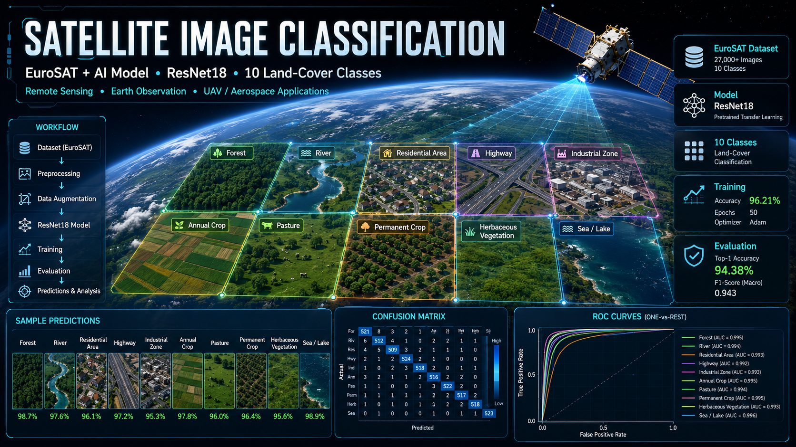

Satellite Image Classification
Transfer-learned ResNet18 trained on EuroSAT to classify satellite imagery into 10 land-cover types — for earth observation, UAV and disaster-response applications.


Overview
This deep learning project trains a ResNet18 convolutional neural network, pretrained on ImageNet and fine-tuned on the EuroSAT dataset, to categorize satellite imagery across 10 land-cover types. It demonstrates practical applications in earth observation, UAV operations, disaster response and terrain analysis through an automated, reproducible pipeline.
Purpose — Why This Project Exists
Manually labeling land cover from satellite imagery does not scale to the volume of imagery captured daily — agriculture monitoring, urban planning and disaster response all need automated, fast, repeatable classification instead. This project shows how transfer learning turns a general-purpose ImageNet model into an accurate land-cover classifier with a fraction of the training data and compute a from-scratch model would need.
Animated Pipeline
Key Features
.tif imagery and NDVI analysis.train.py, evaluate.py, make_gif.py scripts.Benefits
Classifies land cover at a speed manual labeling can't match.
Transfer learning cuts the data and compute needed versus training from scratch.
Architecture supports multispectral .tif imagery and NDVI analysis.
Confusion matrix and ROC curves make model quality easy to verify.
Evaluation Metrics
Accuracy, Precision, Recall, F1-score, per-class ROC curves, confusion matrix, training/validation loss curves and inference-time benchmarking.